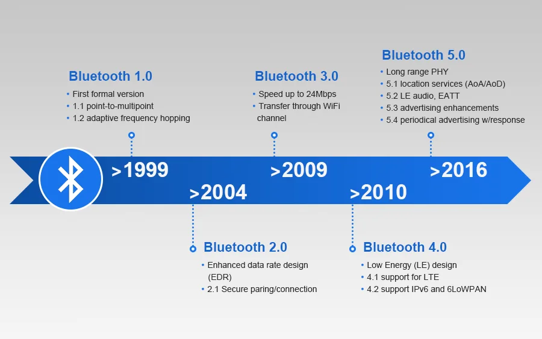

Frequência, Alcance e Evolução
Frequência e Alcance
O Bluetooth opera na faixa ISM (Industrial, Scientific and Medical) de 2,4 GHz, especificamente entre 2,402 GHz e 2,480 GHz. Essa faixa é utilizada internacionalmente por diversos equipamentos eletrônicos e pode ser utilizada sem necessidade de licença em muitos países.
Para minimizar interferências, divide essa faixa em diversos canais e utiliza o sistema de salto de frequência. O alcance da tecnologia depende da potência do dispositivo e da classe utilizada:
- Classe 1: alcance de até 100 metros;
- Classe 2: alcance de até 10 metros (mais comum em celulares e fones);
- Classe 3: alcance de aproximadamente 1 metro.
Obstáculos físicos, paredes e interferências eletromagnéticas podem reduzir a distância real da conexão.
Taxa de Transmissão de Dados
As primeiras versões apresentavam velocidades mais baixas. Segundo informações da UFRJ, a especificação inicial permitia taxas de até 1 Mbps. Na prática, os valores reais variavam, podendo atingir aproximadamente 721 Kbps em transmissões half duplex e cerca de 432 Kbps em transmissões full duplex.
O Bluetooth 2.0 aumentou significativamente a taxa, alcançando valores próximos de 3 Mbps. Já versões 4.0, 5.0 e superiores passaram a oferecer maior velocidade, menor latência, maior alcance e redução no consumo. Apesar de possuir velocidades inferiores às do Wi-Fi, destaca-se pela simplicidade, baixo custo e eficiência energética.
Evolução das Versões

Linha do tempo demonstrando as principais melhorias nas versões do Bluetooth.
Bluetooth Clássico (BR/EDR)
As primeiras versões (1.0 e 1.2) apresentavam cerca de 1 Mbps. O Bluetooth 2.0 + EDR (Enhanced Data Rate) alcançou até 3 Mbps, ideal para transferência de arquivos e áudio (perfis A2DP, HFP e HID). A arquitetura priorizava conexões contínuas, mas o consumo de energia elevado era uma limitação para dispositivos com bateria.
Bluetooth Low Energy (BLE)
Introduzido com o Bluetooth 4.0 em 2010. Focado em dispositivos que necessitam baixo consumo energético e comunicação esporádica de pequenas quantidades de informação. Permite que sensores e smartwatches funcionem por anos com pequenas baterias. Conecta em poucos milissegundos e utiliza a estrutura GATT (Generic Attribute Profile).
Bluetooth 5.x e Inovações Recentes
O Bluetooth 5.0 (2016) trouxe velocidade até 2x maior e alcance até 4x maior em relação ao 4.2. As versões posteriores expandiram os recursos:
- Bluetooth 5.1: Melhorias em localização e rastreamento de dispositivos.
- Bluetooth 5.2: Trouxe o LE Audio, baseado em BLE, com melhor qualidade sonora e menor consumo.
- Bluetooth Mesh: Suporte eficiente para redes em malha, utilizadas em automação residencial.